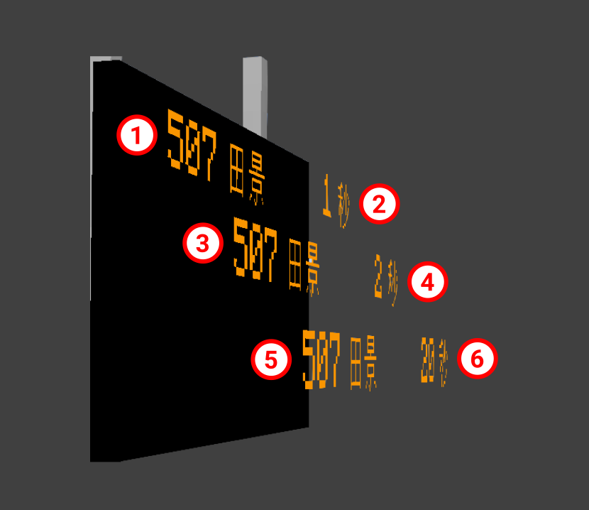

PIDS Scripting
PIDS Scripting allows you to use JavaScript to control Scripted PIDS Preset contents.
Concept#
Draw/Rendering#
JCM PIDS Scripting allows you to draw either a Text or Texture onto the Minecraft World.
When drawn, they are just regular polygons rendered onto the Minecraft World rather than being a 2D plane with a texture. Therefore it is possible for elements to overflow beyond the PIDS screen, and it is the developer responsibility to ensure such events should not happen.
If you absolutely require sophisticated image processing/clipping, you may follow this section to draw and manipulate a texture and draw it onto a 2D Plane. However it may result in slightly slower performance/higher memory usage.
Draw Layer/Order#
The draw order/z-index is depicted by the order the image is drawn in. Whichever elements gets drawn later, whichever element goes in-front. See the image below: (z-differences is exaggerated for demonstration purposes)

The number in the circle depicts the order in which the element is drawn in. 1 gets drawn first, then 2, 3, 4, 5 and finally 6.
As such, element 6 is the frontmost element, which can cover element 1-5 if overlapped.
Global Environment#
A script is evaluated & executed when a PIDS Preset is loaded during the resource-pack loading phase.
Therefore, the same type of PIDS Preset will use the same working environment (global variables and etc).
Code written in top-level space outside of functions will run when a resource package is loaded, and can be used to load resources such as models and textures. It is recommended to store resources (such as models, fonts and textures) in global variables, which do not need to be different for each PIDS block, to avoid excessive memory usage caused by loading a copy of the same content for each PIDS.
Implementation#
Registering a Scripted PIDS Preset#
A preset is automatically considered as a Scripted PIDS Preset by specifying either scriptFiles or scriptTexts property in joban_custom_resources.json:
{
"pids_images": [
{
"id": "pids_tut",
"name": "JS Tutorial Preset",
"scriptTexts": ["print('Goodbye World');"],
"scriptFiles": ["jsblock:scripts/pids_tut.js"]
}
]
}
scriptFiles points to the list of script file to load.
scriptTexts allows you to directly write JS inside, but should only be used for simple variable declaration.
Note: At the moment, mixing Scripted PIDS Preset and JSON PIDS Preset is not possible.
Called Functions#
Your script should include the following functions that JCM will call as needed:
function create(ctx, state, pids) { ... }
function render(ctx, state, pids) { ... }
function dispose(ctx, state, pids) { ... }
| Functions | Description |
|---|---|
create |
It is called when a PIDS is rendered for the first time and can be used to perform some initialization operations, for example, to create dynamic textures. |
render |
This function is called at-most once per frame. It is used to draw contents onto the PIDS. In practice however, the code is executed in a separate thread so as not to slow down FPS. If it takes too long to execute the code, it may be called once every few frames instead of every frame. |
dispose |
Called when a PIDS Block goes out of sight. Can be used for things like releasing the dynamic textures to free up memory. |
JCM calls these functions with three parameters, each of which is described below.
| Parameter | Description |
|---|---|
First (ctx) |
Used to pass rendering actions to JCM. Type — PIDSScriptContext. |
Second (state) |
A JavaScript object associated with a single PIDS Block. The initial value is {}, and its content can be set arbitrarily to store what should be different for each PIDS Block. |
Third (pids) |
Used to get the status of pids and arrivals. Type — PIDSWrapper |
The following lists all the rendering control operations that can be performed and all the information that can be obtained about PIDS.
API Reference#
Check JCM Version#
You can obtain JCM version by using Resources.getAddonVersion("jcm").
This would return a string formatted like: 2.0.0-beta.5
Rendering Related#
Text (aka TextWrapper)#
| Functions And Objects | Description |
|---|---|
Text.create()Text.create(comment: string) |
Create a new text object |
Text.pos(x: number, y: number): TextWrapper |
Set the X and Y position of the element |
Text.size(w: number, h: number): TextWrapper |
Set the width and height of the element (Used in conjunction with Text.stretchXY() and Text.scaleXY()) |
Text.text(str: string): TextWrapper |
Set the text content to str |
Text.scale(i: double): TextWrapper |
Set the text's scale to i. Defaults to 1 |
Text.leftAlign(): TextWrapper |
Align the text to the left (Default) |
Text.centerAlign(): TextWrapper |
Align the text to the center |
Text.rightAlign(): TextWrapper |
Align the text to the right |
Text.shadowed(): TextWrapper |
Add shadow to the drawn text |
Text.italic(): TextWrapper |
Set the text style to Italic |
Text.bold(): TextWrapper |
Set the text style to Bold |
Text.stretchXY(): TextWrapper |
Text Overflow Mechanism: When text overflowed beyond it's size, stretch the text on the overflowing axis to fit |
Text.scaleXY(): TextWrapper |
Text Overflow Mechanism: When the text overflowed beyond it's size, stretch the text on both axis to fit (Keep aspect ratio) |
Text.wrapText(): TextWrapper |
Text Overflow Mechanism: When the text overflowed beyond it's size, split the text into the next line without any scaling. |
Text.marquee(): TextWrapper |
Text Overflow Mechanism: When the text overflowed beyond it's size, draw a portion of the text at a time with scrolling animation |
Text.fontMC(): TextWrapper |
Use vanilla Minecraft's font |
Text.font(id: string): TextWrapperText.font(id: Identifier): TextWrapper |
Set the font by it's ID. Defaults to mtr:mtrThe font should be loaded in Minecraft via the font json format. This does not have any effect if Use Custom MTR Font is disabled in MTR mod's Config. |
Text.color(color: number): TextWrapper |
Set the text color, in RGB format. |
Text.draw(ctx: PIDSScriptContext): void |
Mark the text as something that should be rendered to the PIDS. |
Texture (aka TextureWrapper)#
| Functions And Objects | Description |
|---|---|
Texture.create()Texture.create(comment: string) |
Create a new texture object |
Texture.pos(x: number, y: number): TextureWrapper |
Set the X and Y position of the element |
Texture.size(w: number, h: number): TextureWrapper |
Set the width and height of the element |
Texture.texture(id: string): TextureWrapperTexture.texture(id: Identifier): TextureWrapper |
Set the texture ID to draw. Note that the texture ID should point to a PNG file or an .mcmeta file. |
Texture.color(color: number): TextureWrapper |
Set the text color, in RGB format. |
Texture.uv(u2: number, v2: number): TextureWrapperTexture.uv(u1: number, v1: number, u2: number, v2: number): TextureWrapper |
Set the UV coordinates |
Texture.draw(ctx: PIDSScriptContext): void |
Mark the texture as something that should be rendered to the PIDS. |
PIDS Object Related#
PIDSWrapper#
| Functions And Objects | Description |
|---|---|
PIDSWrapper.type: string |
Return the type of PIDS used, possible value are: - rv_pids - rv_pids_sil_1 - rv_pids_sil_2 - lcd_pids - pids_projector - pids_1a |
PIDSWrapper.width: number |
The full width of the available PIDS screen area. |
PIDSWrapper.height: number |
The full height of the available PIDS screen area. |
PIDSWrapper.rows: number |
The number of arrival rows supported by the PIDS Block |
PIDSWrapper.isRowHidden(i: number): boolean |
Returns whether the arrival for that row is hidden. (via PIDS Config) |
PIDSWrapper.getCustomMessage(i: number): string |
Returns the custom message configured for that row via PIDS Config. Empty string ( "") if not set. |
PIDSWrapper.isPlatformNumberHidden(): boolean |
Returns whether the platform number is set to hidden. (via PIDS Config) |
PIDSWrapper.station(): Station |
Returns the station area that this PIDS is in.null if not in any station. |
PIDSWrapper.arrivals(): ArrivalsWrapper |
Returns the arrivals obtained for the PIDS. |
ArrivalsWrapper#
| Functions And Objects | Description |
|---|---|
ArrivalsWrapper.get(i: number): ArrivalWrapper? |
Returns the ith arrival entry.null if there's no ith arrival entry or no arrival information. |
ArrivalsWrapper.mixedCarLength(): boolean |
Returns whether the list of arrivals have arrival entry with different cars. |
ArrivalsWrapper.platforms(): ObjectArrayList<Platform> |
Returns the platforms that all arrival entry is stopping at. |
ArrivalWrapper#
Represent a single arrival entry.
| Functions And Objects | Description |
|---|---|
ArrivalWrapper.destination(): string |
Returns the destination name of the arrival entry. (Usually the destination's station, or a custom destination string) |
ArrivalWrapper.arrivalTime(): number |
Returns the epoch time (in Millisecond) the train is arriving at. Use new Date(value: number)to obtain a JS Date object of the arrival time. |
ArrivalWrapper.departureTime(): number |
Returns the epoch time (in Millisecond) the train is departing at. Use new Date(value: number)to obtain a JS Date object of the departure time. |
ArrivalWrapper.deviation(): number |
Returns the deviation[?] |
ArrivalWrapper.realtime(): boolean |
Returns whether the arrival entry is scheduled (i.e. Train not departed), or a real-time estimation (i.e. Train running) |
ArrivalWrapper.departureIndex(): number |
Returns the departure index[?] |
ArrivalWrapper.terminating(): boolean |
Returns whether the arrival entry is terminating its service at the current platform. |
ArrivalWrapper.route(): Route |
Returns the route object of the route that the train is running on. Might be null if the route cannot be found (e.g. Deleted) |
ArrivalWrapper.routeId(): number |
Returns the id of the route that the train is running on. |
ArrivalWrapper.routeName(): string |
Returns the name of the route that the train is running on. |
ArrivalWrapper.routeNumber(): string |
Returns the route number string (Previously called LRT Route Number), empty string if route number is not set. |
ArrivalWrapper.routeColor(): number |
Returns the color of the route that the train is running on. |
ArrivalWrapper.circularState(): Route.CircularState |
Returns the circular state of the route that the train is running on. |
ArrivalWrapper.platform(): Platform |
Returns the platform object that the train is approaching towards. |
ArrivalWrapper.platformId(): number |
Returns the id of the platform that the train is approaching towards. |
ArrivalWrapper.platformName(): string |
Returns the name of the platform that the train is approaching towards. |
ArrivalWrapper.carCount(): number |
The car length of the train in that arrival entry. |
ArrivalWrapper.forEachCar(consumer: Consumer<CarDetails>): void |
Allows you to loop through each car of the train in that arrival entry. |
Transport Simulation Core Related#
Transport Simulation Core (TSC) is the backend serving MTR 4. Below are some of the classes in TSC, which may be returned by JCM above.
Platform#
| Functions And Objects | Description |
|---|---|
Platform.routes: ObjectAVLTreeSet<Route> |
A list of routes that goes through this platform. |
Platform.routeColors: IntAVLTreeSet |
All colors of route that goes through this platform. |
Platform.getName(): string |
Returns the platform name. |
Platform.getId(): number |
Returns the platform ID. |
Platform.getDwellTime(): number |
The dwell time duration of the platform in millisecond. |
Route#
| Functions And Objects | Description |
|---|---|
Route.depots: ObjectArrayList<Depot> |
A list of depot associated with this route[?] |
Route.getName(): string |
Returns the platform name. |
Route.getId(): number |
Returns the route ID. |
Route.getColor(): number |
Returns the color of the route. |
Route.getHidden(): boolean |
Returns whether the route is hidden. |
Route.getDestination(index: number): string |
Returns name of index of the following order: - Custom Destination - Station Area Name - Platform Name |
Route.getRouteType(): RouteType |
Returns the type of route: - NORMAL - LIGHT_RAIL - HIGH_SPEED |
Using AWT Graphics/Dynamic Textures#
While not a regular tested use case for PIDS, you can create a Dynamic Textures and draw it onto a PIDS:
importPackage(java.awt);
function create(ctx, state, pids) {
state.tex = new GraphicsTexture(pids.width, pids.height);
}
function render(ctx, state, pids) {
let g = state.tex.graphics;
g.setColor(Color.RED);
g.fillRect(0, 0, pids.width, pids.height);
g.setColor(Color.GREEN);
g.fillRect(0, 0, Math.abs(Math.sin(Timing.elapsed())) * pids.width, pids.height);
state.tex.upload();
Texture.create("Dynamic Texture")
.texture(state.tex.identifier)
.size(pids.width, pids.height)
.draw(ctx);
}
function dispose(ctx, state, pids) {
state.tex.close();
}